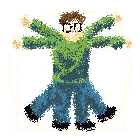
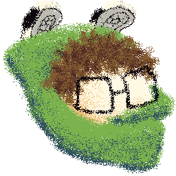

oh boy...who the hell am i?
this has probably been one of the pages i've been putting off properly doing because online strangers will base a large part of their perception of you on it.
while i've never been one to care whether people think i'm weird or obtuse, i do care i present my authentic self without compromise.
okay lets do this thing...


you can call me spuds! i'm the current resident of this here shack.
not a native of the internet void, instead i came into existence in the UK at some period soon after the mid-2000s.
allegedly this means i have become an adult which will likely not sink in for another decade.
definitely won't look it for a bit either due to my half-chinese genetics.
at the moment i continue to have few responsibilities for a bit longer thanks to university.
since i'm indecisive, i'm doing natural sciences but am starting to specialise into either developmental biology or zoology.
i really love both fields but am completely clueless what to do with myself after graduation.
aside from that i have a lot of fun playing accordion in the ceilidh band and helping with tech for theatre shows.
as for my more solitary hobbies i really enjoy making art, playing games, watching shows/films, reading books, folding origami, making this website and coding (mostly to mod said games but i've been trying out some game dev).
the trouble is that my automatic response whenever i have a sliver of free time is to watch youtube so i'm bad at engaging with these consistently :(.
well i'm writing this now! at least that's something :).
in terms of stuff i watch on youtube i love:
- media deepdives
- music theory analyses
- indie shows/films
- animation discussion
- parodies/satire
- storytime videos
- scientific topics
- music covers
- underrated game lists
- ghosthunting
- game design
- devlogs
- reverse engineering/modding
i used to watch more gaming content but it started to feel a bit samey and nowadays i want to play a lot of games blind.
stuff i like in media:
- more fantasy than sci-fi
- experimental artstyles or approaches to presentation
- romance or horror are not the primary focus
- exploration of cool worlds
- good writing valued over spectacle in films/shows
- animal documentaries
- not trying to be mature for no reason
- media which respects your time i.e no contrived side plot/grinding/heavy-handed descriptive writing etc.
- 3D platformers with fun movement (often lacking double jumps)
- tackling of difficult topics such as disability, abuse, existentialism etc.
- sequels which actually develop the characters and world meaninfully
music tastes:
- south arcade
- polyphia
- the crane wives
- sara bareilles
- honey revenge
- john mayer
- rebecca sugar
-
2000/2010s pop
- avril lavigne
- one direction
- kelly clarkson
- bastille
- britney spears
- bruno mars
- the click five
- demi lovato
- maroon 5
- *NSYNC
- owl city
- rihanna
- the script
- shawn mendes
- snow patrol
- take that
-
tv soundtracks
- arcane
- kpop demon hunters
- bolt
- encanto
- how to train your dragon
- scott pilgrim vs the world
- steven universe
-
game soundtracks
- celeste
- ghostrunner
- pseudoregalia
- hollow knight
- rainworld
- a hat in time
- blue fire
- undertale
- deltarune
- shovel knight
- hades
- one shot
- risk of rain 2
-
UKish folk
- talisk
- imar
- flook
- elephant session
- jeremy kittel
- box club
food tastes:
-
fruit
- apples
- oranges
- grapes
- bananas
- lychee
...and i hate the texture of literally every other fruit
-
vegetables (i like basically all of them)
- peppers
- spinach
- tomato
- carrot
- courgette
- aubergine
- brussels sprouts
all cooked of course because why would you eat them raw?
stir fry a lettuce it'll blow your mind.
- mushrooms
- cheese
- pickled gherkins
- olives
- nuts
-
breakfast
- steamed buns
- full english
-
toast spreads
- lemon curd
- ginger preserve
- marmite
- strawberry jam
- marmalade
- congee
- pancakes
- waffles
- muesli
- granola
gonna be honest i find most cereals either too bland or too sweet
-
british food (trust me we have good food)
- sunday roast
- yorkshire pudding wraps
- fish pie
- sheperd's/cottage/cumberland pie
- fish and chips
- cornish pasties
- lamb hotpot
- steak and kidney pie
- any stew/casserole
-
biscuits
- ginger nuts
- custard creams
- jaffa cakes
- hobnobs
- fruit shortcake
- chocolate fingers
- tea cake
- flapjack
- mince pies
- eccles cakes
- bread and butter pudding
-
chinese food
-
饺子
- 肠粉
- 春卷
- 糖醋排骨
- 火锅
- 狮子头
- 红烧肉
- 皮蛋
- 锅包肉
- 炖茄子
- 北京烤鸭
- 牛肉粉丝/蚂蚁上树
- 蒸鱼
- 炒面
- 麻婆豆腐
- 粥
- 煎饼
- 粽子
- 油条
- 冬瓜排骨汤
- 麻团
- 包子
- 月饼
- 汤圆
(the last three especially with 豆沙, 莲蓉 or 黑芝麻 filling)
- pasta bolognese
- lasagne
- chilli con/sin carne
- seafood paella
- beef borguignon
- lamb tagine